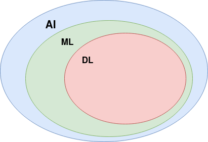
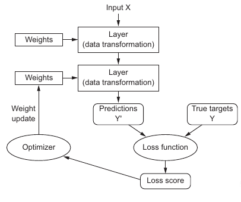

Data Science for Copernicus Data¶
Artificial Intelligence, Machine Learning and Deep Learning¶

AI¶
Human intelligence by machines.
Started in the 1950s.
The umbrella that includes ML and DL but also non-learning methods such as hard-coded rules (symbolic AI).
First AI chess programs are considered as symbolic AI.
Symbolic AI is adapted to solve well defined problems such as chess. However, it was proved intractable for more complex challenges such as computer vision, natural language processing, etc. The later motivated ML.
ML¶
“Machine learning arises from this question: could a computer go beyond “what we know how to order it to perform” and learn on its own how to perform a specified task?”*
Symbolic AI
Machine learning
An ML is trained and not hard-coded.
DL¶
DL models learn successive layers of increasingly meaningful representations (that’s why they are deep).
DL models are able to learn useful representations from the data and require less feature engineering when compared to classical machine learning models.
No evidence that DL models perform like human brain.

Datasets¶
Sentinel-2 images coming from one of the DIAS environments.
Vector dataset coming from the Registre Parcellaire Graphique of France.
Prerequisites¶
Basic knowledge in python programming language.
knowledge in GIS.
Technical environment¶
Ubuntu, Python, Numpy, GDAL, Tifffile, rasterio, rasterstats, Scikit-learn, Tensorflow, Keras, XGBoost, Google SDK, Matplotlib, Plotly, Dash, Pandas, Geopandas, Jupyter
Use cases¶
Crop dataset¶
Context¶
This use case aims at introducing the participants to the application machine learning techniques on structured datasets. The dataset is constructed using a vector dataset (shapefile) and a temporal series of Sentinel-2 images. The vector dataset contains field boundaries from the French database (RGP) of different crop types. Various machine learning techniques are then applied to the constructed dataset in order to detect anomalies on a specific crop type and classify multiple crop types.
Educational objectives¶
After this use case, the participants will be able to:
Prepare datasets using multiple data sources such as vector datasets and satellite images.
Extract features using a prior knowledge related to the use case or using machine learning.
Select a proper preprocessing technique to clean the dataset.
Use visualization tools to explore the dataset before any further processing.
Learn the differences between machine learning algorithms and select the one that fits their application.
Prepare a training dataset that will allow them to use it for training machine learning algorithms.
Train machine learning models to perform classification and regression tasks and use best practices for cross validation and parameters tuning.
Sentinel-2 image dataset¶
Context¶
This use case introduces the participants to the application of machine learning and deep learning techniques on satellite images. The application will focus on semantic image segmentation on Sentinel-2 images.
Educational objectives¶
After this use case, the participants will be able to:
Learn the differences between machine learning and deep learning models for image segmentation.
Prepare datasets that are adapted for machine learning and deep learning models training.
Train machine learning and deep learning models for image segmentation with cross validation and parameters tuning.